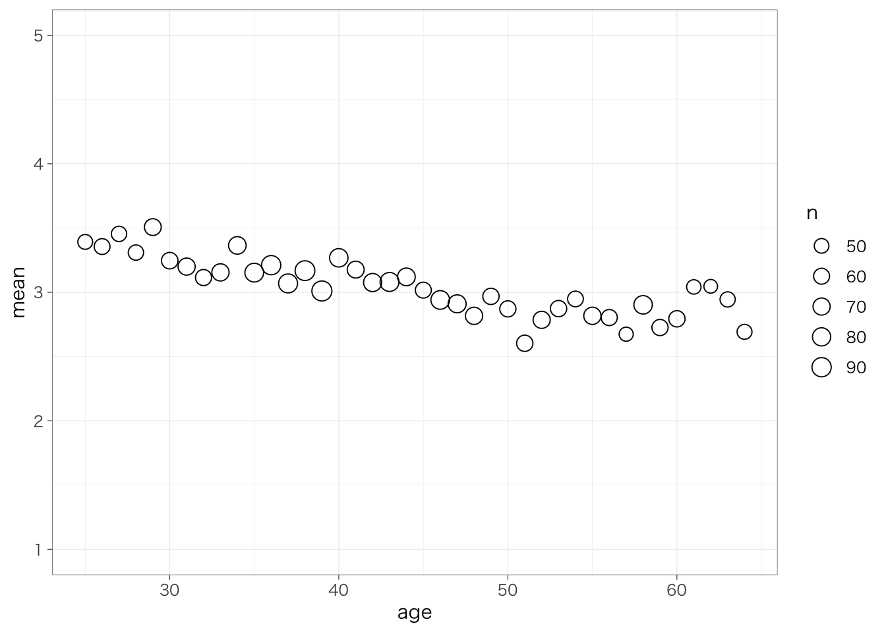
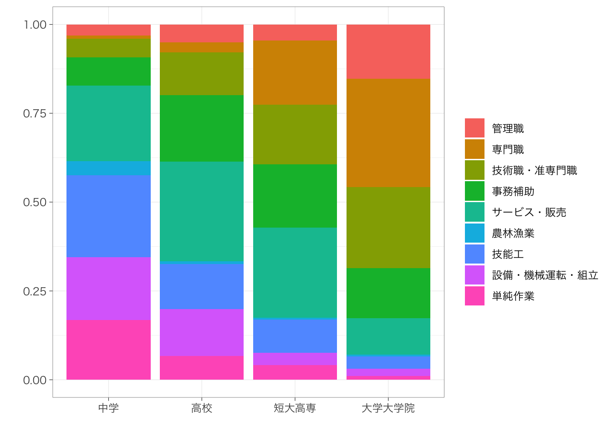
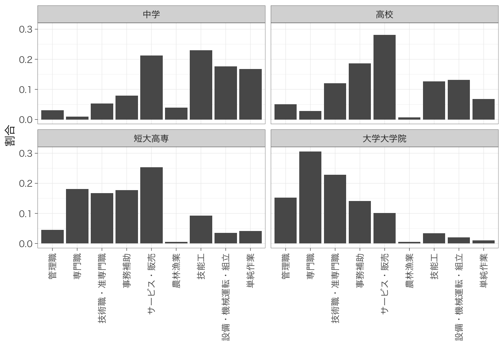
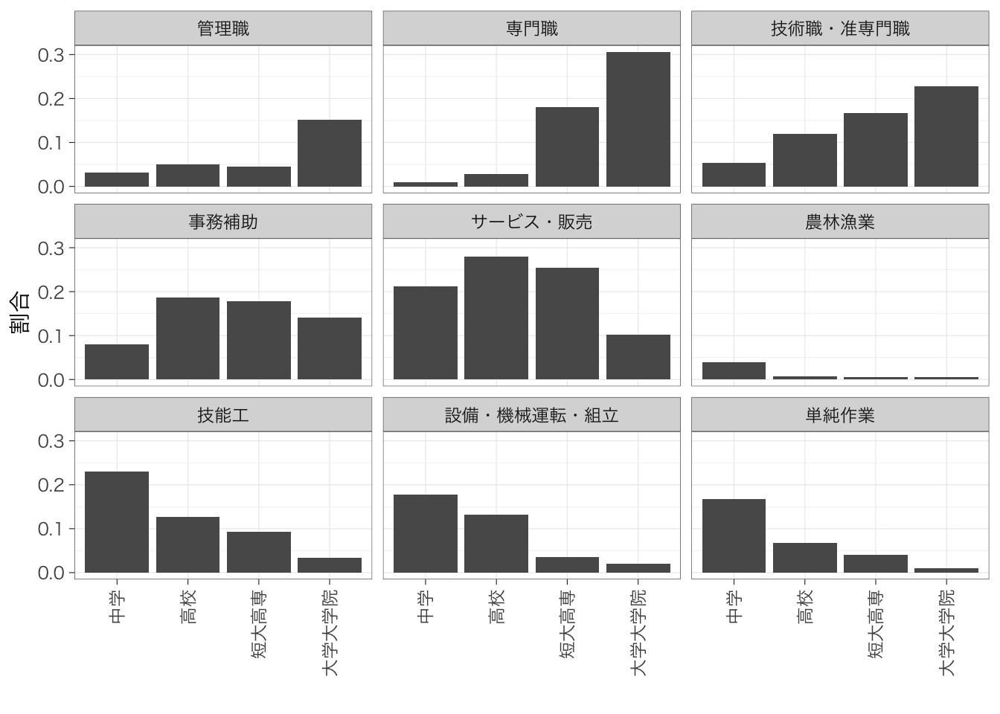

Chapter 6 2変数の集計
本章では、2変数の集計方法を説明する。
内容に入る前に、右上のプロジェクトのボックスの横が、前章で作成したプロジェクトの名前（たとえば、seminar_sociology_r）になっているかどうかを確認しておこう。なっていない場合は、右上のボックスをクリックして、「Open Project…」を選択し、前章で作成したRprojファイル（たとえば、seminar_sociology_r.Rprojといったような名前になっている）を選んで、プロジェクトを切り替えよう。
さらに、これまでの章で説明した以下のパッケージを読み込んだ上で、第4章で作成したデータを読み込んでpiaacというデータフレームに入れていることを前提とする。具体的には、以下のコードを実行しておく必要がある。
library(tidyverse)
library(gtsummary)
library(flextable)
piaac <- read_rds("data/piaac_sample_analytic.rds")加えて、第5章で確認したように、ggplotの設定を変更しておくことで見やすいグラフを作ることができる。ここでは以下のコードを実行している。
Macの場合：
theme_set(theme_bw(
base_family = "HiraginoSans-W3",
base_size = 11,
base_rect_size = 0.2,
base_line_size = 0.2
))Windowsの場合：
2変数の集計を行う場合の方法は、結果として位置づけられる変数と、原因として位置づけられる変数、それぞれの変数のもつ性質（連続変数なのか、カテゴリ変数なのか）によって種類によっていくつかのパターンに分けることができる。結果となる変数のことを、被説明変数 explained variableまたは従属変数 dependent variable、原因となる変数のことを説明変数 explanatory variableまたは独立変数 independent variableという。変数の性質の組み合わせにより、以下の表のように4つの集計方法のパターンに分けることができる。
| 従属変数 | ||
|---|---|---|
| 独立変数 | 連続変数 | カテゴリ変数 |
| カテゴリ変数 | 平均値の比較、分布の比較 | クロス表 |
| 連続変数 | 散布図 | （平均値の比較、分布の比較、またはクロス表） |
独立変数が連続変数で、従属変数がカテゴリ変数の場合は効果的な2変数の集計の方法はなく、平均値の比較や分布の比較、または連続変数をいくつかのカテゴリに区切ってクロス表で代替することが多い。
以下、それぞれの分析方法について紹介する。
6.1 平均値の比較
6.1.1 基本
カテゴリ変数の値ごとに連続変数の値を比較したい。たとえば性別ごとに賃金の平均値を比較したいとする。このようなときには、前章で学んだ連続変数を集計する方法に、以下のようにグループに分けるための命令group_by()を付け加えることで、グループ別の集計を行うことができる。
## # A tibble: 2 × 2
## gender mean
## <fct> <dbl>
## 1 女性 1339.
## 2 男性 2196.前章で説明したときと同様、集計する変数にNAが含まれていると計算ができず、結果はNAとなる。グループ別に集計する場合はgroup_by()で分ける変数にNAが含まれている可能性も考えないといけない。たとえば、父親学歴parenteducごとに集計してみるとどうだろうか。ここでは、平均値だけではなく標準偏差と人数を合わせてチェックしてみよう。
piaac %>%
group_by(fathereduc) %>%
summarize(mean = mean(wage), # 平均値を計算
sd = sd(wage), # 標準偏差を計算
n = n() # 人数を数える
)## # A tibble: 4 × 4
## fathereduc mean sd n
## <fct> <dbl> <dbl> <int>
## 1 初等教育 1689. 1181. 912
## 2 中等教育 1772. 1157. 1120
## 3 高等教育 1985. 1260. 639
## 4 <NA> 1680. 984. 57このように、group_by()で分ける変数にNAが含まれている場合には、それもグループとみなしたうえで集計を行う。これがそのまま残っているとグラフを作ったりするときに面倒になるので、やはりNAはあらかじめ除外しておくとよい。
piaac %>%
filter(is.na(fathereduc) == FALSE) %>% # is.na(fathereduc)で、fathereducの値がNAならTRUE, NAでないならFALSEを返す
group_by(fathereduc) %>%
summarize(mean = mean(wage),
sd = sd(wage),
n = n())## # A tibble: 3 × 4
## fathereduc mean sd n
## <fct> <dbl> <dbl> <int>
## 1 初等教育 1689. 1181. 912
## 2 中等教育 1772. 1157. 1120
## 3 高等教育 1985. 1260. 6396.1.2 棒グラフによる可視化
平均値の違いを視覚的にみたいときには、棒グラフを作るのがよい。先ほどのようにカテゴリごとに平均値を計算したうえで、geom_col()で棒グラフを作ることができる。
piaac %>%
group_by(gender) %>%
summarize(mean = mean(wage)) %>%
ggplot(aes(x = gender, y = mean)) + # 横軸に性別、縦軸に平均値
geom_col() +
labs(x = "性別", y = "平均賃金")
6.1.3 複数カテゴリの組み合わせ
複数のカテゴリ変数を組み合わせて平均値を比較したいということもあるだろう。このような場合も、基本は同じ。group_by()の部分に複数の変数を指定することで、カテゴリを組合わせた集計ができる。
## `summarise()` has grouped output by 'gender'. You can
## override using the `.groups` argument.## # A tibble: 8 × 5
## # Groups: gender [2]
## gender educ mean sd n
## <fct> <fct> <dbl> <dbl> <int>
## 1 女性 中学 993. 563. 94
## 2 女性 高校 1158. 633. 466
## 3 女性 短大高専 1363. 775. 466
## 4 女性 大学大学院 1749. 921. 258
## 5 男性 中学 1743. 1288. 132
## 6 男性 高校 1900. 1045. 482
## 7 男性 短大高専 1935. 1142. 215
## 8 男性 大学大学院 2615. 1495. 615棒グラフを作ることももちろんできる。いくつかのパターンを示しておく。
## `summarise()` has grouped output by 'gender'. You can
## override using the `.groups` argument.学歴で色分けするパターン：
meandata %>%
ggplot(aes(x = gender, y = mean, fill = educ)) + # fillで色分けする変数を指定
geom_col(position = "dodge") + # position = "dodge"とすることで棒を重ねずに表示する
labs(x = "性別", y = "平均賃金", fill = "学歴")
性別で色分けするパターン：
meandata %>%
ggplot(aes(x = educ, y = mean, fill = gender)) +
geom_col(position = "dodge") +
labs(x = "学歴", y = "平均賃金", fill = "性別")
また、グラフそのものを分割するという方法も考えられる。facet_wrap()を使うことで、指定した変数でグラフを分割することができる。
meandata %>%
ggplot(aes(x = educ, y = mean)) +
geom_col() +
labs(x = "学歴", y = "平均賃金") +
facet_wrap(~gender) # genderでグラフを分割
なお、2つの変数でグラフを分割する（たとえば、性別・学歴別にグラフを分割する）場合には、facet_grid()というコードを用いる。(gender~educ)とすることで、行に性別、列に学歴というふうに分割することができる。逆に、facet_grid(educ~gender)とすると、行に学歴、列に性別というふうに分割することができる。
先ほど、性別・学歴別に平均賃金を示した3種類の図を示した。このなかで、どの図が最も良いのだろうか？それは、その図を通じて何を伝えたいかに依存する。棒グラフの場合、隣り合った棒はより比べやすく、離れているほど比べにくくなる。したがって、「同じ学歴であっても、男女間で平均賃金に差がある」ということを伝えたい場合には、性別が隣り合うようにして、性別で色分けしたグラフがよいだろう。一方で、「同じ性別であっても、学歴によって平均賃金に差がある」ということを伝えたい場合には、学歴どうしが隣り合うようにして、性別を離したグラフがよいだろう。
6.2 分布の比較
平均値だけではなく、分布そのものを比較することでより全体の違いがわかりやすい事がある。前章ではヒストグラムを使って連続変数の分布をみる方法を紹介した。これをグループ別にそれぞれ書いてみよう。
複数のヒストグラムを重ねるときには、geom_histogram()のなかでposition = "identity"と指定する。また、ヒストグラムが重なると片方が見えなくなってしまうので、alpha = 0.5などと指定することで、透明度をつける。alpha = 1がデフォルトで、0に近づくほど透明度が高くなる。
piaac %>%
ggplot(aes(x = wage, fill = gender)) +
geom_histogram(position = "identity", alpha = 0.5) +
labs(fill = "")## `stat_bin()` using `bins = 30`. Pick better value with
## `binwidth`.
グループ間で人数が異なると少し比較が難しいかもしれない。このような場合は縦軸を度数ではなく密度（density）にするとよい。aes()の部分にy = ..density..という指定を加えることで、縦軸を密度にすることができる。
密度を使うと、ヒストグラムで囲まれた部分の面積がちょうど1になるように縦軸のスケール（高さ）が決定される。このときの縦軸のスケールのことを指して密度（density）という。
piaac %>%
ggplot(aes(x = wage, y = ..density.., fill = gender)) +
geom_histogram(position = "identity", alpha = 0.5) +
labs(fill = "")## `stat_bin()` using `bins = 30`. Pick better value with
## `binwidth`.
カテゴリの数が2つならいいが、たくさんの場合には見にくくなってしまう。そのような場合には先ほど紹介したfacet_wrap()をつかって図を分けるのがよいだろう。たとえば、職業ごとに賃金のヒストグラムをつくる場合には、次のようにする。
## `stat_bin()` using `bins = 30`. Pick better value with
## `binwidth`.
6.3 クロス表
6.3.1 基本
カテゴリ変数の場合は平均値などを計算することはできないので、度数をみることが有効であった。カテゴリ変数の度数分布をグループ間で比べることも可能である。たとえば、親の学歴（父親と母親のうちどちらか高い方の学歴をとった変数）parenteducによって本人の学歴の分布がどの程度異なるのかを知りたいとする。これは、前章で紹介したwith(table())を使うとできる。
## educ
## parenteduc 中学 高校 短大高専 大学大学院
## 初等教育 127 337 125 106
## 中等教育 78 464 332 329
## 高等教育 21 147 224 438このように、カテゴリ変数の分布をグループごとに集計した表を指して、クロス集計表 cross tabulation、あるいはたんにクロス表という。 もちろんこれだけだと、どの学歴ではどの職業が多いのかというのは一見してすぐにわからない。そこで、行%を計算することで、より学歴ごとの内訳がわかりやすくなる。これを理解するために、まず、行合計と列合計をそれぞれ付け加えた表をみてみよう。addmargins()で、行と列の合計を表に付け加えることができる。
## educ
## parenteduc 中学 高校 短大高専 大学大学院 Sum
## 初等教育 127 337 125 106 695
## 中等教育 78 464 332 329 1203
## 高等教育 21 147 224 438 830
## Sum 226 948 681 873 2728それぞれ、親学歴が初等教育、中等教育、高等教育の者がそれぞれ何人いるか、本人学歴が中学、高校、短大高専、大学大学院の者がそれぞれ何人いるかを確認できる。
行割合は、行のカテゴリごとに、列のカテゴリの分布を示したものである。たとえば、親学歴が初等教育の場合は、各セルの値を合計人数695で割り、中等教育の場合は1203で割り……というふうに計算する。with(table())で作成した表に対して prop.table(margin = 1)を実行すると、行割合を求めることができる。
## educ
## parenteduc 中学 高校 短大高専 大学大学院
## 初等教育 0.18273381 0.48489209 0.17985612 0.15251799
## 中等教育 0.06483791 0.38570241 0.27597672 0.27348296
## 高等教育 0.02530120 0.17710843 0.26987952 0.52771084たとえば親の学歴が初等教育の場合、本人学歴が大学の者は0.152である。他方で、親の学歴が高等教育の場合は、本人学歴が大学の者は0.527である。したがって、親の学歴が高いほど、本人の学歴も高いことがわかる。
なお、prop.table()内でmarginを指定することで、それぞれ行割合、列割合、総割合を求めることができる。margin = 1とした場合には、上記のように行割合を計算する。margin = 2とした場合には、列割合を計算する。たとえば、本人学歴が中学の場合は、各セルの値を合計人数226で割り……というふうに計算する。
## educ
## parenteduc 中学 高校 短大高専 大学大学院
## 初等教育 0.56194690 0.35548523 0.18355360 0.12142039
## 中等教育 0.34513274 0.48945148 0.48751836 0.37686140
## 高等教育 0.09292035 0.15506329 0.32892805 0.50171821prop.table()内に何も記載しない場合には、総割合を求める。つまり、各セルの値を総人数（2728）で割るということである。
## educ
## parenteduc 中学 高校 短大高専 大学大学院
## 初等教育 0.046554252 0.123533724 0.045821114 0.038856305
## 中等教育 0.028592375 0.170087977 0.121700880 0.120601173
## 高等教育 0.007697947 0.053885630 0.082111437 0.160557185なお、何も指定しない場合には小数点第8位までの結果が表示されるが、実際にはそんなに小さい値は重要ではないことがほとんどである。そこで、見やすいところで値を丸めるのがよい。また、値を100倍することで、百分率（行%、列%、あるいは総%）に直すとさらに見やすいだろう。round()関数を使うことで、小数点以下第何位まで表示するかを指定することができる。round(digits = 3)であれば、小数点第3位まで表示する。
piaac %>%
with(table(parenteduc, educ)) %>%
prop.table(margin = 1) %>%
round(digits = 3) * 100 #小数点第3位で丸めて、100倍する（%になおす）## educ
## parenteduc 中学 高校 短大高専 大学大学院
## 初等教育 18.3 48.5 18.0 15.3
## 中等教育 6.5 38.6 27.6 27.3
## 高等教育 2.5 17.7 27.0 52.86.3.2 カイ2乗検定（補足）
クロス表を作成したときにみられた関連（たとえば今回の場合であれば、親の学歴が高いほど子どもの学歴も高い傾向がある = 親の学歴と子どもの学歴に関連がある）がたんなる偶然で生じたものではなく、母集団においても確かに関連があるかどうかを確かめたいとする。これを統計的検定という。
クロス表の場合には、カイ二乗検定という方法を用いて検定を行う。カイ二乗検定では、（もし親の学歴と子どもの学歴の間にまったく関連がなかったとしたら得られるであろう）架空のクロス表と比べて、実際のクロス表で得られた結果が大きくかけ離れていたのであれば、やはり母集団においても親の学歴と子どもの学歴の間には関連があるのだろう（親の学歴と子どもの学歴の間に関連がないという帰無仮説を棄却する）、というふうに考えて関連の有無を判定する。
with(table())で作成したテーブルに対してchisq.test()を実行することでカイ二乗検定を行うことができる。
##
## Pearson's Chi-squared test
##
## data: .
## X-squared = 432.95, df = 6, p-value < 2.2e-16「p-value」というところをみると、非常に低い値を示していることがわかる14。これはつまり、もし母集団において親の学歴と子どもの学歴の間に全く関連がなかったとしたら、偶然にも今回のデータのようなクロス表が得られる確率は極めて低い、ということを表している。この結果から、「親の学歴と子どもの学歴には関連がない」という帰無仮説を棄却して、たしかに、親の学歴と子どもの学歴には関連があるのだと主張することができる。
6.3.3 きれいなクロス表をつくる - gtsummary::tbl_cross()
とはいえ、このクロス表はあまり見やすいものとはいえない。度数（人数）と行%がいずれも表示され、かつ、周辺度数（行合計と列合計）も同時に表示したグラフを簡単に作ることはできないだろうか。このようなときに、前章でも紹介したgtsummaryパッケージに含まれているgtsummary::tbl_cross()関数が役に立つ。
行%を表記する場合は、tbl_cross(data = xx, row = 行にする変数, column = 列にする変数, percent = "row")と書く。
|
educ
|
Total | ||||
|---|---|---|---|---|---|
| 中学 | 高校 | 短大高専 | 大学大学院 | ||
| parenteduc | |||||
| 初等教育 | 127 (18%) | 337 (48%) | 125 (18%) | 106 (15%) | 695 (100%) |
| 中等教育 | 78 (6.5%) | 464 (39%) | 332 (28%) | 329 (27%) | 1,203 (100%) |
| 高等教育 | 21 (2.5%) | 147 (18%) | 224 (27%) | 438 (53%) | 830 (100%) |
| Total | 226 (8.3%) | 948 (35%) | 681 (25%) | 873 (32%) | 2,728 (100%) |
値が度数、括弧内が行%を意味している。
このクロス表もいくつかの点で改良の余地がある。以下の3つの点で修正をしてみよう。
- parenteduc, educがそれぞれ何を指しているのか、日本語の名前をつけたい：
label = list(x ~ "名前") - 行および列の合計が”Total”と記載されているが、これを「合計」という日本語の名前にしたい：
margin_text = "合計"
piaac %>%
tbl_cross(parenteduc, educ,
percent = "row",
label = list(parenteduc ~ "親学歴", educ ~ "本人学歴"),
margin_text = "合計") |
本人学歴
|
合計 | ||||
|---|---|---|---|---|---|
| 中学 | 高校 | 短大高専 | 大学大学院 | ||
| 親学歴 | |||||
| 初等教育 | 127 (18%) | 337 (48%) | 125 (18%) | 106 (15%) | 695 (100%) |
| 中等教育 | 78 (6.5%) | 464 (39%) | 332 (28%) | 329 (27%) | 1,203 (100%) |
| 高等教育 | 21 (2.5%) | 147 (18%) | 224 (27%) | 438 (53%) | 830 (100%) |
| 合計 | 226 (8.3%) | 948 (35%) | 681 (25%) | 873 (32%) | 2,728 (100%) |
これならばそのまま論文に掲載できるくらいきれいな図になっている。もちろんこれもwordファイルに書き出すことができる。この方法については本章最後に紹介する。
with(table())のときと違って、もし変数の値に欠損値（NA）が含まれている場合には、表から自動的に除外されず、tbl_cross()は当該ケースを”Unknown”という行または列として表示する。このようなときには、missing = "no"というオプションを加えることで、欠損値を除外したクロス表を出すことができる。
|
educ
|
Total | ||||
|---|---|---|---|---|---|
| 中学 | 高校 | 短大高専 | 大学大学院 | ||
| fathereduc | |||||
| 初等教育 | 141 | 439 | 172 | 160 | 912 |
| 中等教育 | 66 | 392 | 326 | 336 | 1,120 |
| 高等教育 | 10 | 91 | 172 | 366 | 639 |
| Unknown | 9 | 26 | 11 | 11 | 57 |
| Total | 226 | 948 | 681 | 873 | 2,728 |
|
educ
|
Total | ||||
|---|---|---|---|---|---|
| 中学 | 高校 | 短大高専 | 大学大学院 | ||
| fathereduc | |||||
| 初等教育 | 141 | 439 | 172 | 160 | 912 |
| 中等教育 | 66 | 392 | 326 | 336 | 1,120 |
| 高等教育 | 10 | 91 | 172 | 366 | 639 |
| Total | 217 | 922 | 670 | 862 | 2,671 |
6.4 クロス表を図示する
6.4.1 count()を利用する
クロス表は数値が多いので、図で表されているとわかりやすいかもしれない。このようなときには、前章で説明したcount()を使うことで、比較的簡単に図をつくることができる。
たとえば、先ほどからみているように、親学歴ごとに対象者本人の学歴の分布を集計して、親学歴によって学歴の分布はどの程度異なっているのかを示した棒グラフを作りたいとしよう。count()の前でグループを分割するgroup_by()を指定しておき、そのうえでcount()すれば、親学歴かつ本人学歴ごとの度数を求めることができる。
## # A tibble: 12 × 3
## # Groups: parenteduc [3]
## parenteduc educ n
## <fct> <fct> <int>
## 1 初等教育 中学 127
## 2 初等教育 高校 337
## 3 初等教育 短大高専 125
## 4 初等教育 大学大学院 106
## 5 中等教育 中学 78
## 6 中等教育 高校 464
## 7 中等教育 短大高専 332
## 8 中等教育 大学大学院 329
## 9 高等教育 中学 21
## 10 高等教育 高校 147
## 11 高等教育 短大高専 224
## 12 高等教育 大学大学院 438あとは、グループ（この場合は親学歴）のなかでの割合（すなわち、先ほどからみている行%）を求めて、ggplot()に渡してやるとよい。
table <- piaac %>%
group_by(parenteduc) %>%
count(educ) %>%
mutate(sum = sum(n)) %>%
mutate(prop = n / sum) # いったんtableという名前をつけて保存しておく
table # 中身を確認## # A tibble: 12 × 5
## # Groups: parenteduc [3]
## parenteduc educ n sum prop
## <fct> <fct> <int> <int> <dbl>
## 1 初等教育 中学 127 695 0.183
## 2 初等教育 高校 337 695 0.485
## 3 初等教育 短大高専 125 695 0.180
## 4 初等教育 大学大学院 106 695 0.153
## 5 中等教育 中学 78 1203 0.0648
## 6 中等教育 高校 464 1203 0.386
## 7 中等教育 短大高専 332 1203 0.276
## 8 中等教育 大学大学院 329 1203 0.273
## 9 高等教育 中学 21 830 0.0253
## 10 高等教育 高校 147 830 0.177
## 11 高等教育 短大高専 224 830 0.270
## 12 高等教育 大学大学院 438 830 0.528table %>%
ggplot(aes(y = prop, x = parenteduc, fill = educ)) +
geom_col() +
labs(x = "", y = "割合", fill = "本人学歴")
積み上げ棒グラフは各カテゴリの大きさがわかりにくいので、ばらして始点をそろえるほうが見やすいかもしれない。
table %>%
ggplot(aes(y = prop, x = parenteduc, fill = educ)) +
geom_col(position = "dodge") +
labs(x = "", y = "割合", fill = "本人学歴") 
6.4.2 count()の注意点
count()は、該当ケースがない場合にはそのグループを除いて集計してしまう。たとえば、以下のようなクロス表があるとしよう。
|
educ
|
Total | ||||
|---|---|---|---|---|---|
| 中学 | 高校 | 短大高専 | 大学大学院 | ||
| parenteduc | |||||
| 初等教育 | 40 | 57 | 10 | 13 | 120 |
| 中等教育 | 11 | 23 | 5 | 14 | 53 |
| 高等教育 | 0 | 8 | 4 | 12 | 24 |
| Total | 51 | 88 | 19 | 39 | 197 |
このクロス表では、親学歴が高等教育かつ本人が中学卒のケースが一人も存在しない。このような場合、count()を実行すると、親学歴が高等教育かつ本人が中学卒の行が含まれない。
## # A tibble: 11 × 3
## # Groups: parenteduc [3]
## parenteduc educ n
## <fct> <fct> <int>
## 1 初等教育 中学 40
## 2 初等教育 高校 57
## 3 初等教育 短大高専 10
## 4 初等教育 大学大学院 13
## 5 中等教育 中学 11
## 6 中等教育 高校 23
## 7 中等教育 短大高専 5
## 8 中等教育 大学大学院 14
## 9 高等教育 高校 8
## 10 高等教育 短大高専 4
## 11 高等教育 大学大学院 12count()のオプションとして.drop = FALSEを指定すると、該当ケースがない場合にはn = 0を入れて集計してくれる。
## # A tibble: 12 × 3
## # Groups: parenteduc [3]
## parenteduc educ n
## <fct> <fct> <int>
## 1 初等教育 中学 40
## 2 初等教育 高校 57
## 3 初等教育 短大高専 10
## 4 初等教育 大学大学院 13
## 5 中等教育 中学 11
## 6 中等教育 高校 23
## 7 中等教育 短大高専 5
## 8 中等教育 大学大学院 14
## 9 高等教育 中学 0
## 10 高等教育 高校 8
## 11 高等教育 短大高専 4
## 12 高等教育 大学大学院 126.5 散布図
6.5.1 散布図をみる
連続変数どうしの関係をみたいときには、散布図を使う。散布図を書くときには、geom_point()を使う。サンプルサイズが大きい場合には点がかぶってしまうので、かぶっている箇所がわかりやすいよう、透明度を指定するか、点の形状を変えると良い。shape = 1というオプションをつけると、白抜きの点にできる15。

散布図の傾向を表すような直線を引くと、関係がよりわかりやすいだろう。
piaac %>%
ggplot(aes(x = age, y = wage)) +
geom_point(shape = 1) +
geom_smooth(method = "lm", se = FALSE)## `geom_smooth()` using formula = 'y ~ x'
geom_smooth()というのは、2つの変数の関連の傾向を示す線を描く関数。カッコ内で、どのような線を引くのかを指定する。
method = "lm"という部分は、回帰分析により推定される直線を引くという指定を表している。何も書かない場合には、method = "loess"（局所回帰）による線が描かれる。se = FALSEの部分では、係数の標準誤差から計算される95%信頼区間を書かないという指定を表している。何も書かない場合には、信頼区間がプロットされる。
6.5.2 カテゴリごとに散布図を分ける
たとえば男性と女性で別々に散布図を書きたいということがあるだろう。このような場合には、facet_wrap()を使うか、color =を指定する。
piaac %>%
ggplot(aes(x = age, y = wage)) +
geom_point(shape = 1) +
geom_smooth(method = "lm", se = FALSE) +
facet_wrap(~gender)## `geom_smooth()` using formula = 'y ~ x'
piaac %>%
ggplot(aes(x = age, y = wage, color = gender)) +
geom_point(shape = 1) +
geom_smooth(method = "lm", se = FALSE) ## `geom_smooth()` using formula = 'y ~ x'
6.5.3 相関係数
相関係数は以下のように定義される：
\[ r = \frac{\textrm{Cov}(x, y)}{\textrm{Sd}(x)\textrm{Sd}(y)} = \frac{\frac{1}{N} \sum_{i = 1}^N(x_i - \overline{x})(y_i - \overline{y})}{\sqrt{\frac{1}{N} \sum_{i = 1}^N(x_i - \overline{x})^2}\sqrt{\frac{1}{N} \sum_{i = 1}^N(y_i - \overline{y})^2}} \]
相関係数はsummarize()コマンドで計算できる。NAが含まれている場合にはやはり計算結果もNAになってしまうので、前もってNAの行がないかどうかのチェックも忘れずに。
## # A tibble: 1 × 1
## cor
## <dbl>
## 1 0.1356.6 2変数集計のときのくふう
6.6.1 値が粗い連続変数を扱う
値が粗い連続変数を扱う場合、散布図があまり可視化の役に立たないことがある。例えば、健康状態について尋ねた質問の選択肢に次のように値を与え、高いほど健康であることを示すようにした変数（health）があるとする。
| 選択肢 | 調査票上の番号 | 数値化例 |
|---|---|---|
| 極めて優れている | 1 | 5 |
| 大変良い | 2 | 4 |
| 良い | 3 | 3 |
| どちらともいえない | 4 | 2 |
| 悪い | 5 | 1 |
年齢が高いほど健康状態が悪くなるだろうというのは容易に予想できるので、年齢を横軸、健康状態を縦軸にとった散布図を書くと右下に点が集まるはずだと思ったが、散布図を書いてみると、点が重なってしまってなんだかよくわからない散布図になってしまう。

このような場合はどうしたらよいだろうか？解決策の1つは、平均値の比較のときのように、横軸の変数の値ごとに健康状態の平均値を計算し、それをプロットするという方法がある。
piaac %>%
group_by(age) %>%
summarize(mean = mean(health)) %>%
ggplot(aes(x = age, y = mean)) +
geom_point() +
ylim(1, 5) # y軸の取りうる範囲は健康状態の最小値（1）と最大値（5）とする
ただ、この図では人数が少ない年齢層も多い年齢層も同じ大きさの点で描かれてしまっていることが少し不満かもしれない。点の大きさを考慮したい場合には、バブル・プロットを使う。aestheticsのところでsize =を指定することで、点の大きさを変えることができる。ただしその際には、scale_size_area(max_size = 5)（max_size = の数字を変えることで円の大きさを変更できる）などというふうに円の面積に関するコマンドを含めないと円の大きさと人数が対応しなくなってしまうため、注意が必要。
piaac %>%
group_by(age) %>%
summarize(mean = mean(health),
n = n()) %>%
ggplot(aes(x = age, y = mean, size = n)) +
geom_point(shape = 1) +
scale_size_area(max_size = 5) +
ylim(1, 5)
6.6.2 カテゴリが多いクロス表を扱う
学歴によって就いている職業の分布がどのように異なっているかを知りたいとする。このような場合にはクロス表を作る。
|
occupation
|
Total | |||||||||
|---|---|---|---|---|---|---|---|---|---|---|
| 管理職 | 専門職 | 技術職・准専門職 | 事務補助 | サービス・販売 | 農林漁業 | 技能工 | 設備・機械運転・組立 | 単純作業 | ||
| educ | ||||||||||
| 中学 | 7 (3.1%) | 2 (0.9%) | 12 (5.3%) | 18 (8.0%) | 48 (21%) | 9 (4.0%) | 52 (23%) | 40 (18%) | 38 (17%) | 226 (100%) |
| 高校 | 48 (5.1%) | 27 (2.8%) | 114 (12%) | 177 (19%) | 266 (28%) | 7 (0.7%) | 120 (13%) | 125 (13%) | 64 (6.8%) | 948 (100%) |
| 短大高専 | 31 (4.6%) | 123 (18%) | 114 (17%) | 121 (18%) | 173 (25%) | 4 (0.6%) | 63 (9.3%) | 24 (3.5%) | 28 (4.1%) | 681 (100%) |
| 大学大学院 | 133 (15%) | 267 (31%) | 199 (23%) | 123 (14%) | 89 (10%) | 5 (0.6%) | 30 (3.4%) | 18 (2.1%) | 9 (1.0%) | 873 (100%) |
| Total | 219 (8.0%) | 419 (15%) | 439 (16%) | 439 (16%) | 576 (21%) | 25 (0.9%) | 265 (9.7%) | 207 (7.6%) | 139 (5.1%) | 2,728 (100%) |
この表はやや横に大きく、数値も多いため、見にくい表になってしまっているかもしれない。実際、これを積み上げ棒グラフにすると、お世辞にもあまり見やすいとはいえないグラフができあがる。
table <- piaac %>%
group_by(educ) %>%
count(occupation) %>%
mutate(prop = n / sum(n))
table %>%
ggplot(aes(x = educ, y = prop, fill = occupation)) +
geom_col() +
labs(x = "", y = "", fill = "") 
そこで、学歴ごとにグラフをわけて、職業の分布を書くという方法がある。facet_wrap()を使ってグラフを分割しよう。
table %>%
ggplot(aes(y = prop, x = occupation)) +
geom_col() +
facet_wrap(~educ) +
labs(x = "", y = "割合") +
theme(axis.text.x = element_text(angle = 90, hjust = 1, vjust = 0.5)) 
もう一つの方法は、職業ごとにグラフをわけて、各学歴において当該職業に就いている人の割合を示すという方法である。
table %>%
ggplot(aes(y = prop, x = educ)) +
geom_col() +
facet_wrap(~occupation) +
labs(x = "", y = "割合") +
theme(axis.text.x = element_text(angle = 90, hjust = 1, vjust = 0.5))
どのように図示するかは、自分がどれだと文章を書きやすいか（何を伝えたいのか）によって決める。
また、このようにカテゴリが多い場合には、そもそもカテゴリをまとめて簡単にするという方法も考えられる。くわしくは、「カテゴリをまとめる」を参照のこと。
6.7 結果をファイルに書き出す
6.7.1 ggplotで作成した図を書き出す
前章の「結果をファイルに書き出す」を参照。
6.7.2 クロス表をwordファイルに書き出す
これも基本的な方法は前章の「記述統計の一覧表をwordに書き出す」と同じ。この章ではすでに冒頭で読み込んでおいたが、flextableパッケージを読み込んでおく。
そのうえで、先ほど作成したグループ別の記述統計量の表をwordファイルに書き出したいときには、以下のように%>%演算子でつないで、as_flex_table() %>% save_as_docs(path = "xxx.docx")というコマンドを追加する。
6.8 練習問題
- 性別（
gender）に、一週間の労働時間（workhour）の分布をヒストグラムを使って可視化してください。 - 親の学歴（
parenteduc）によって数的思考力スコア（numaracy）の平均値がどの程度異なるかを示す棒グラフを作成してください。 - 性別（
gender）と職業（occupation）のクロス表を作成してください。また、適切な割合（行%または列%）を計算して、男性の職業分布と女性の職業分布のがどのように異なるのかについて説明してください。 - 仕事で読み書きを使っている頻度をスコア化した変数（
readwork）と、仕事で計算を使っている頻度をスコア化した変数（numwork）がある。これらの2つの変数の関係を散布図で可視化してください。また、2つの変数の関係を示す直線を引いてください。